Request doc changes
Request doc changes Edit this page
Edit this page Learn how to contribute
Learn how to contributeSnapCenter configuration
Contributors
Overview configuration steps
You must perform the following steps for base SnapCenter configuration and the protection of the HANA resource. Each step is described in detail in the following chapters.
-
Configure SAP HANA backup user and hdbuserstore key. Used to access the HANA database with the hdbsql client.
-
Configure storage in SnapCenter. Credentials to access the FSx for ONTAP SVMs from SnapCenter
-
Configure credentials for plug-in deployment. Used to automatically deploy and install the required SnapCenter plug-ins on the HANA database host.
-
Add HANA host to SnapCenter. Deploys and installs the required SnapCenter plug-ins.
-
Configure policies. Defines the backup operation type (Snapshot, file), retentions, as well asoptional Snapshot backup replication.
-
Configure HANA resource protection. Provide hdbuserstore key and attach policies and schedules to the HANA resource.
SAP HANA backup user and hdbuserstore configuration
NetApp recommends configuring a dedicated database user in the HANA database to run the backup operations with SnapCenter. In the second step, an SAP HANA user store key is configured for this backup user, and this user store key is used in the configuration of the SnapCenter SAP HANA plug-in.
The following figure shows the SAP HANA Studio through which you can create the backup user
The required privileges are changed with the HANA 2.0 SPS5 release: backup admin, catalog read, database backup admin, and database recovery operator. For earlier releases, backup admin and catalog read are sufficient.
For an SAP HANA MDC system, you must create the user in the system database because all backup commands for the system and the tenant databases are executed by using the system database.
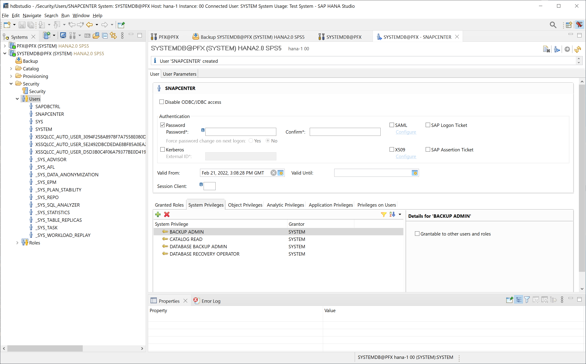
The following command is used for the user store configuration with the <sid>adm user:
hdbuserstore set <key> <host>:<port> <database user> <password>
SnapCenter uses the <sid>adm user to communicate with the HANA database. Therefore, you must configure the user store key by using the <`sid>adm` user on the database host. Typically, the SAP HANA hdbsql client software is installed together with the database server installation. If this is not the case, you must install the hdbclient first.
In an SAP HANA MDC setup, port 3<instanceNo>13 is the standard port for SQL access to the system database and must be used in the hdbuserstore configuration.
For an SAP HANA multiple-host setup, you must configure user store keys for all hosts. SnapCenter tries to connect to the database by using each of the provided keys and can therefore operate independently of a failover of an SAP HANA service to a different host. In our lab setup, we configured a user store key for the user pfxadm for our system PFX, which is a single host HANA MDC system with a single tenant.
pfxadm@hana-1:/usr/sap/PFX/home> hdbuserstore set PFXKEY hana-1:30013 SNAPCENTER <password> Operation succeed.
pfxadm@hana-1:/usr/sap/PFX/home> hdbuserstore list DATA FILE : /usr/sap/PFX/home/.hdb/hana-1/SSFS_HDB.DAT KEY FILE : /usr/sap/PFX/home/.hdb/hana-1/SSFS_HDB.KEY ACTIVE RECORDS : 7 DELETED RECORDS : 0 KEY PFXKEY ENV : hana-1:30013 USER: SNAPCENTER KEY PFXSAPDBCTRL ENV : hana-1:30013 USER: SAPDBCTRL Operation succeed.
You can check the access to the HANA system database that uses the key with the hdbsql command.
pfxadm@hana-1:/usr/sap/PFX/home> hdbsql -U PFXKEY
Welcome to the SAP HANA Database interactive terminal.
Type: \h for help with commands
\q to quit
hdbsql SYSTEMDB=>
Configure storage
Follow these steps to configure storage in SnapCenter.
-
In the SnapCenter UI, select Storage Systems.
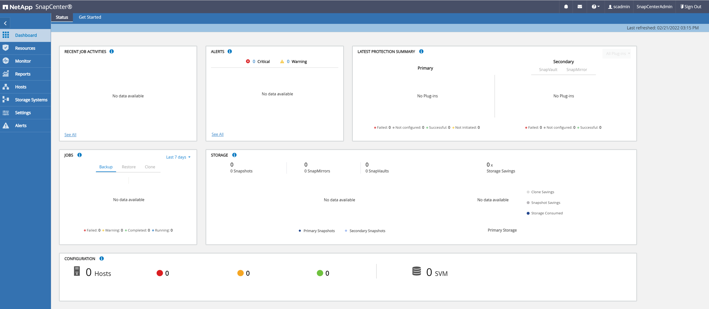
You can select the storage system type, which can be ONTAP SVMs or ONTAP Clusters. In the following example, SVM management is selected.
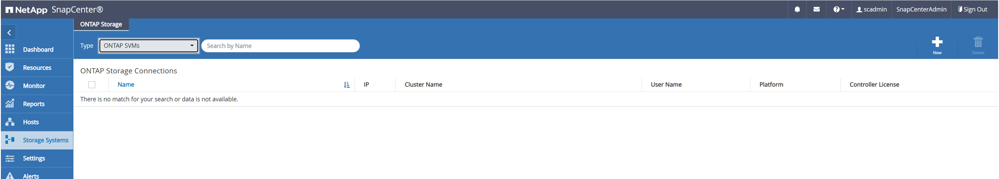
-
To add a storage system and provide the required host name and credentials, click New.
The SVM user is not required to be the vsadmin user, as shown in the following figure. Typically, a user is configured on the SVM and assigned the required permissions to execute backup and restore operations. For information about required privileges, see SnapCenter Installation Guide in the section titled “Minimum ONTAP privileges required”.
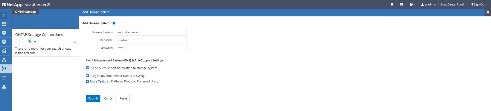
-
To configure the storage platform, click More Options.
-
Select All Flash FAS as the storage system to ensure that the license, which is part of FSx for ONTAP, is available for SnapCenter.
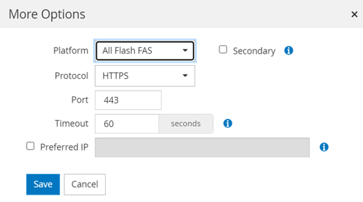
The SVM
sapcc-hana-svmis now configured in SnapCenter.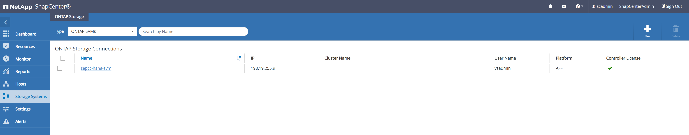
Create credentials for plugin deployment
To enable SnapCenter to deploy the required plug-ins on the HANA hosts, you must configure user credentials.
-
Go to Settings, select Credentials, and click New.
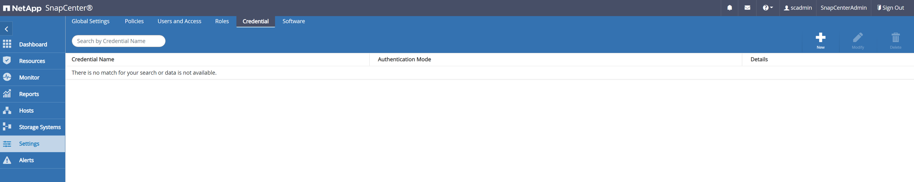
-
In the lab setup, we configured a new user,
snapcenter, on the HANA host that is used for the plug- in deployment. You must enable sudo prvileges, as shown in the following figure.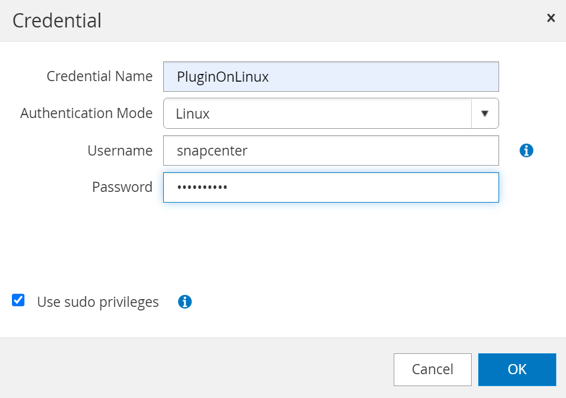
hana-1:/etc/sudoers.d # cat /etc/sudoers.d/90-cloud-init-users # Created by cloud-init v. 20.2-8.48.1 on Mon, 14 Feb 2022 10:36:40 +0000 # User rules for ec2-user ec2-user ALL=(ALL) NOPASSWD:ALL # User rules for snapcenter user snapcenter ALL=(ALL) NOPASSWD:ALL hana-1:/etc/sudoers.d #
Add a SAP HANA host
When adding an SAP HANA host, SnapCenter deploys the required plug-ins on the database host and executes auto discovery operations.
The SAP HANA plug-in requires Java 64-bit version 1.8. Java must be installed on the host before the host is added to SnapCenter.
hana-1:/etc/ssh # java -version openjdk version "1.8.0_312" OpenJDK Runtime Environment (IcedTea 3.21.0) (build 1.8.0_312-b07 suse-3.61.3-x86_64) OpenJDK 64-Bit Server VM (build 25.312-b07, mixed mode) hana-1:/etc/ssh #
OpenJDK or Oracle Java is supported with SnapCenter.
To add the SAP HANA host, follow these steps:
-
From the host tab, click Add.
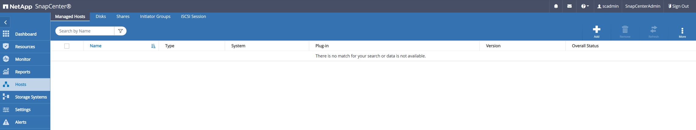
-
Provide host information and select the SAP HANA plug-in to be installed. Click Submit.
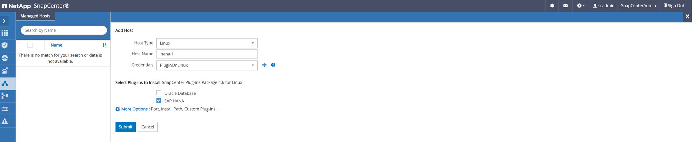
-
Confirm the fingerprint.
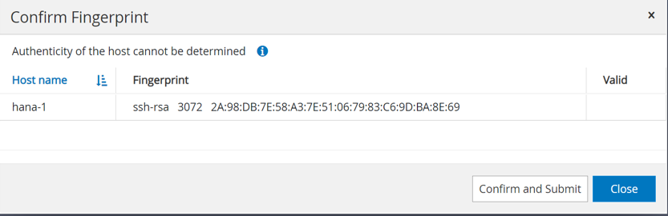
The installation of the HANA and the Linux plug-in starts automatically. When the installation is finished, the status column of the host shows Configure VMware Plug-in. SnapCenter detects if the SAP HANA plug-in is installed on a virtualized environment. This might be a VMware environment or an environment at a public cloud provider. In this case, SnapCenter displays a warning to configure the hypervisor.
You can remove the warning message by using the following steps.
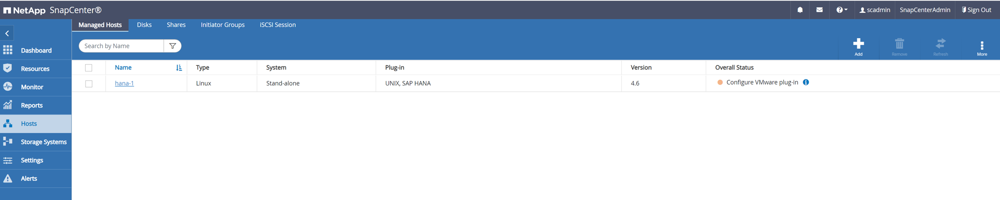
-
From the Settings tab, select Global Settings.
-
For the hypervisor settings, select VMs Have iSCSI Direct Attached Disks or NFS For All the Hosts and update the settings.
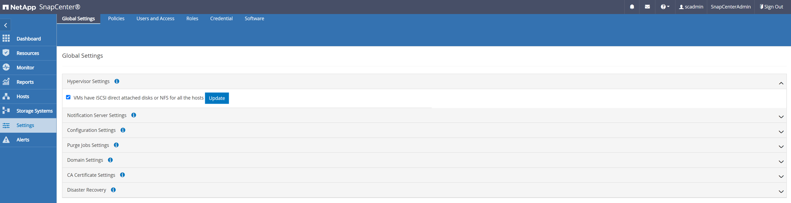
The screen now shows the Linux plug-in and the HANA plug-in with the status Running.
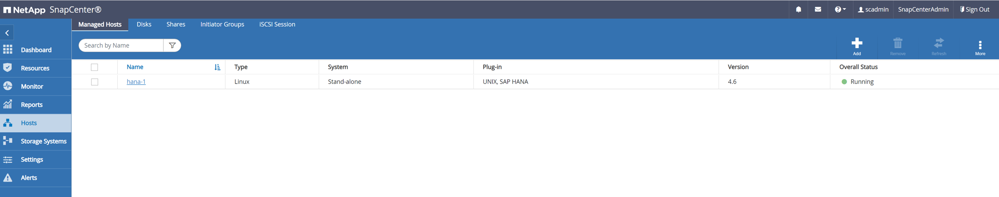
-
Configure policies
Policies are usually configured independently of the resource and can be used by multiple SAP HANA databases.
A typical minimum configuration consists of the following policies:
-
Policy for hourly backups without replication:
LocalSnap. -
Policy for weekly block integrity check using a file-based backup:
BlockIntegrityCheck.
The following sections describe the configuration of these policies.
Policy for Snapshot backups
Follow these steps to configure Snapshot backup policies.
-
Go to Settings > Policies and click New.
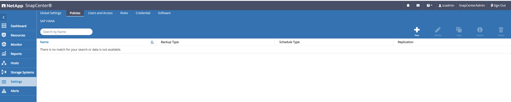
-
Enter the policy name and description. Click Next.
-
Select backup type as Snapshot Based and select Hourly for schedule frequency.
The schedule itself is configured later with the HANA resource protection configuration.
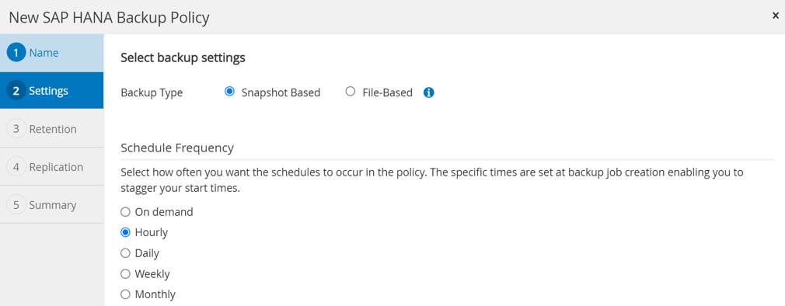
-
Configure the retention settings for on-demand backups.
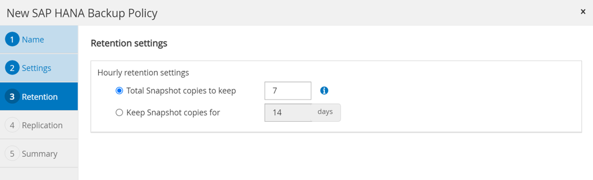
-
Configure the replication options. In this case, no SnapVault or SnapMirror update is selected.
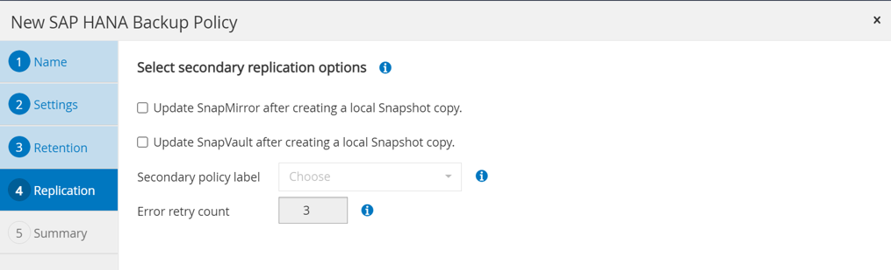
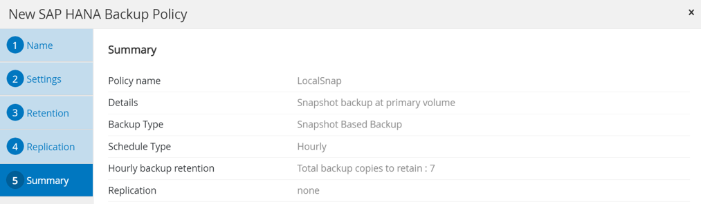
The new policy is now configured.
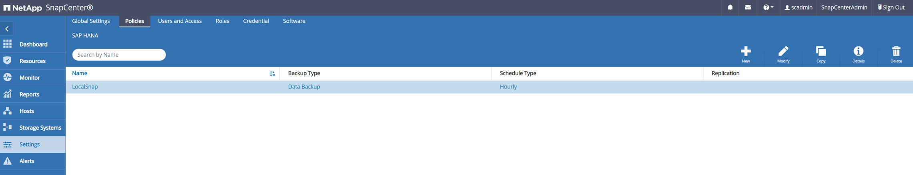
Policy for block integrity check
Follow these steps to configure the block integrity check policy.
-
Go to Settings > Policies and click New.
-
Enter the policy name and description. Click Next.
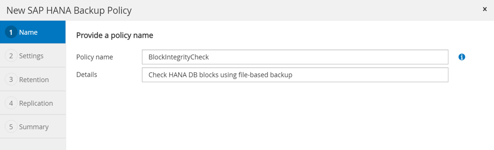
-
Set the backup type to File-Based and schedule frequency to Weekly. The schedule itself is configured later with the HANA resource protection configuration.
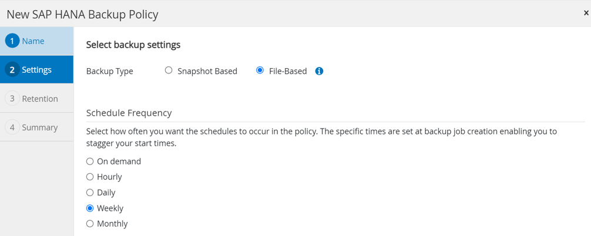
-
Configure the retention settings for on-demand backups.
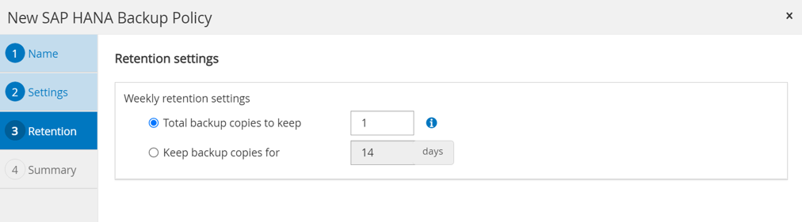
-
On the Summary page, click Finish.
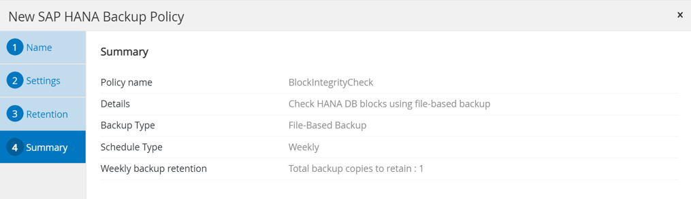
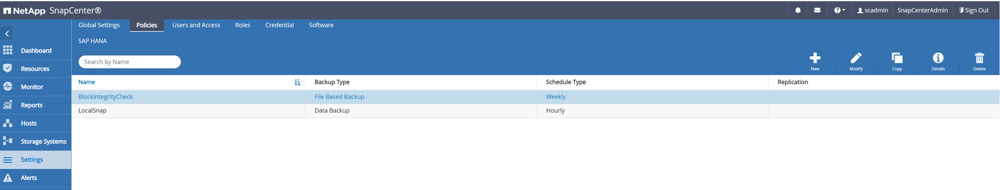
Configure and protect a HANA resource
After the plug-in installation, the automatic discovery process of the HANA resource starts automatically. In the Resources screen, a new resource is created, which is marked as locked with the red padlock icon. To configure and protect the new HANA resource, follow these steps:
-
Select and click the resource to continue the configuration.
You can also trigger the automatic discovery process manually within the Resources screen by clicking Refresh Resources.
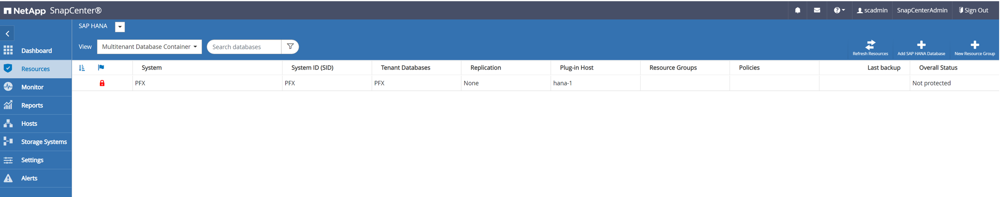
-
Provide the userstore key for the HANA database.
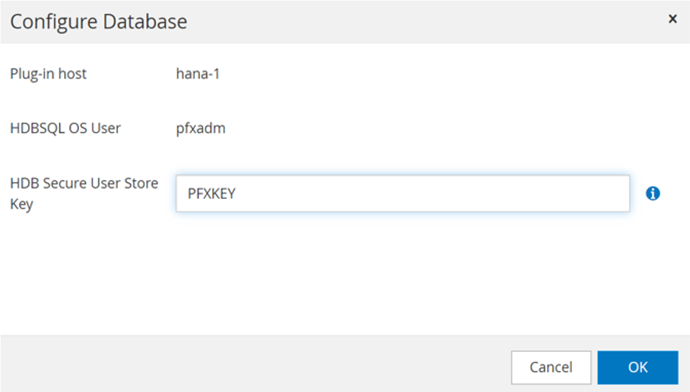
The second level automatic discovery process starts in which tenant data and storage footprint information is discovered.
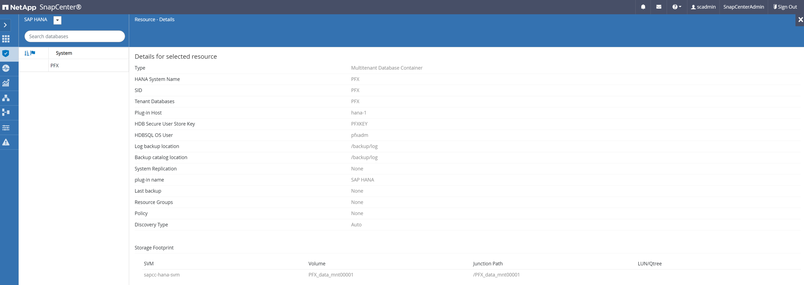
-
From the Resources tab, double click the resource to configure the resource protection.
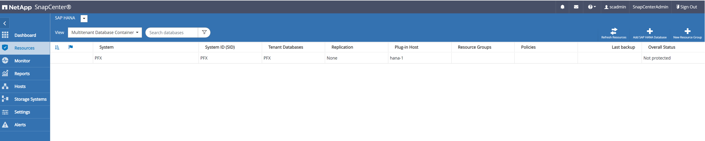
-
Configure a custom name format for the Snapshot copy.
NetApp recommends using a custom Snapshot copy name to easily identify which backups have been created with which policy and schedule type. By adding the schedule type in the Snapshot copy name, you can distinguish between scheduled and on-demand backups. The
schedule namestring for on-demand backups is empty, while scheduled backups include the stringHourly,Daily,or Weekly.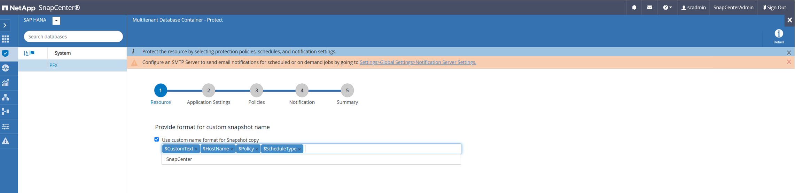
-
No specific setting needs to be made on the Application Settings page. Click Next.
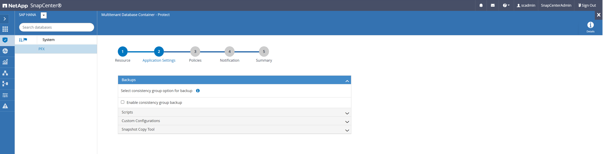
-
Select the policies to be added to the resource.
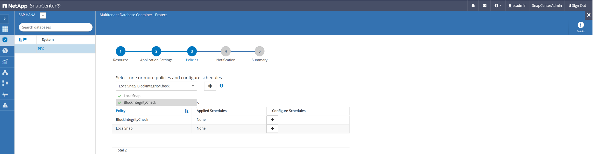
-
Define the schedule for the block integrity check policy.
In this example, it is set for once per week.
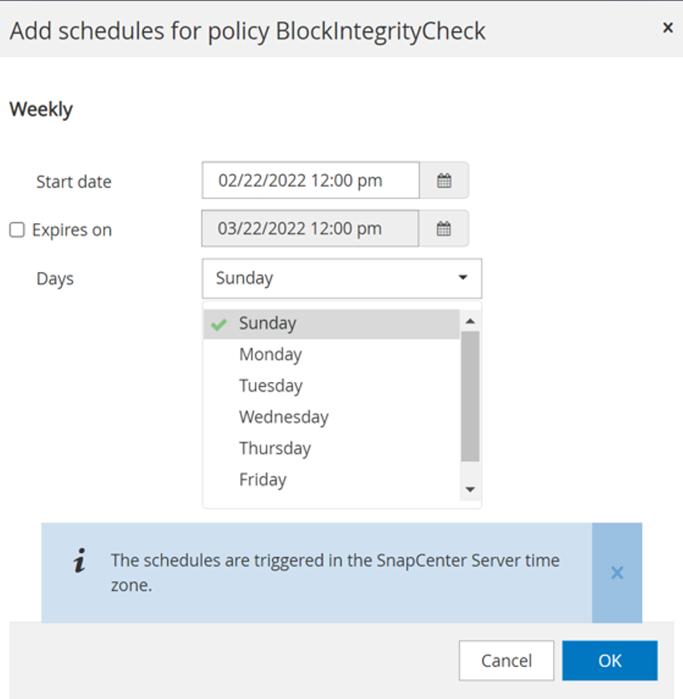
-
Define the schedule for the local Snapshot policy.
In this example, it is set for every 6 hours.
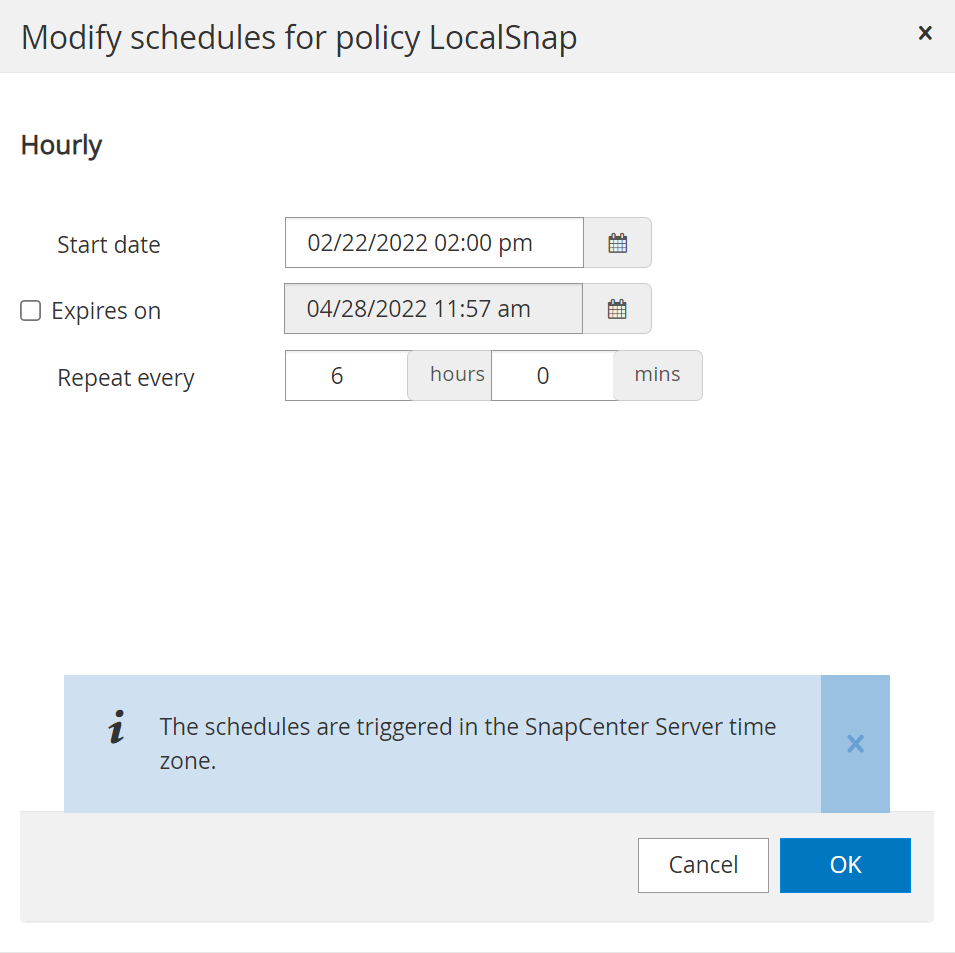
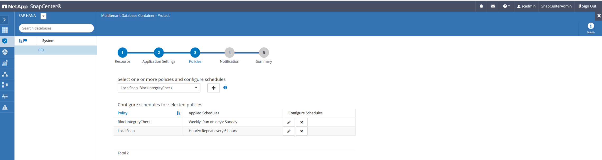
-
Provide information about the email notification.
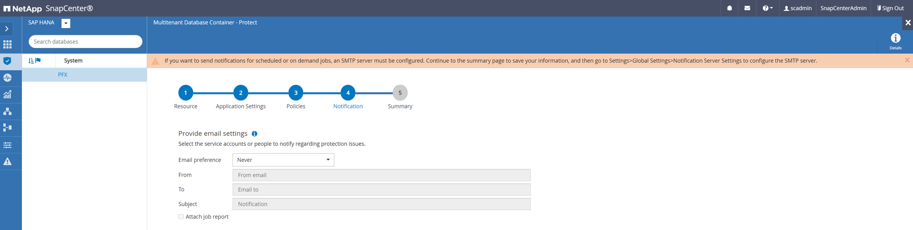
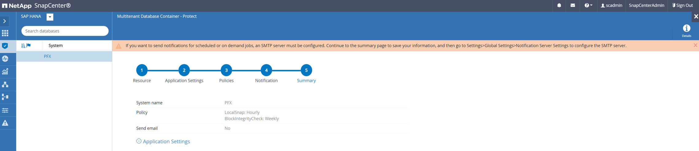
The HANA resource configuration is now completed, and you can execute backups.
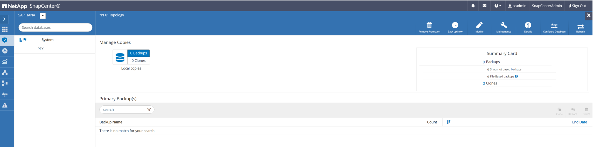